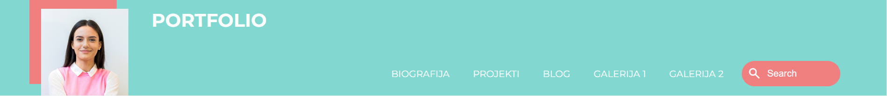

Binarno stablo pretrage
Tema ovog projekta se fokusira na pristup održavanju balansiranosti binarnog stabla pretrage. Postoje mnoge metode koje služe za održavanje balansiranosti binarnog stabla pretrage, kao što su na primjer AVL stabla. Jedan od načina je da se simulira slučajni redoslijed umetanja u stablo, kao što mi to radimo u ovom projektu. Ključne operacije, uključujući pretragu, umetanje, brisanje i razdvajanje, trebaju se izvoditi efikasno. Umetanje se vrši na klasičan način, ali dodatno se vrše rotacije kako bi se očuvala osobina heapa. Brisanje uključuje zamjenu čvora sa sljedbenikom ili prethodnikom u sortiranom redoslijedu, dok razdvajanje, posebna operacija, umeće element sa zadatim ključem, kojem se dodjeljuje prioritet veći od prioriteta korijena, pretvarajući ga u novi korijen. Smatra se da će binarno stablo implementirano na ovaj način imati veliku vjerovatnoću da bude balansirano.


Portfolio
Prilikom prijavljivanja za poslove u IT sektoru, potrebno je dostaviti CV i projekte na kojima sam radila. Često je poželjno predstaviti se i putem web stranice, te ću ja vjerovatno dostaviti i ovaj Portfolio. Cilj portfolija je da na zanimljiv i profesionalan način prikaže moje vještine i iskustvo, te da privuče pažnju poslodavaca. Kroz stranicu se upoznajete sa mojom biografijom, obrazovanjem i projektima na kojim sam radila. Također imate pristup dvjema galerijama sa slikama koje predstavljaju stvari koje volim, te imate i pristup blogu sa 2 teme iz IT sektora koje sam smatrala zanimljivim. Predstavljam vam osnovne specifikacije ovog projekta.
